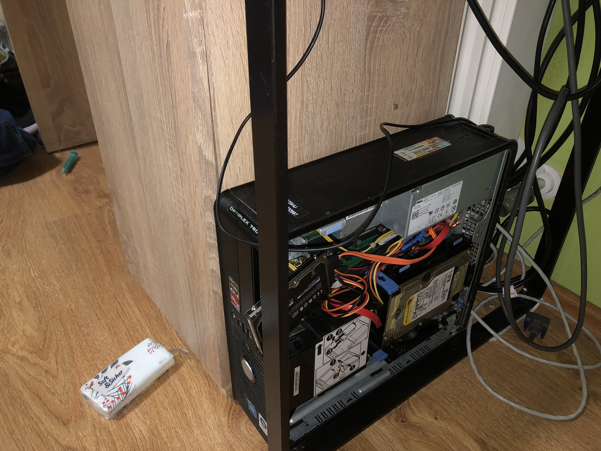

This is used as a home server.
CPU: Intel Core 2 Duo E8400 @ 3.00 GHz 2 cores 2 threads
RAM: 4GB DDR2
Storage: 250GB 2.5" HDD from somewhere and a 1TB WD Black
GPU: NVIDIA GeForce GT 720 1GB (GigaByte GV-N720D3-1GL)
Because.